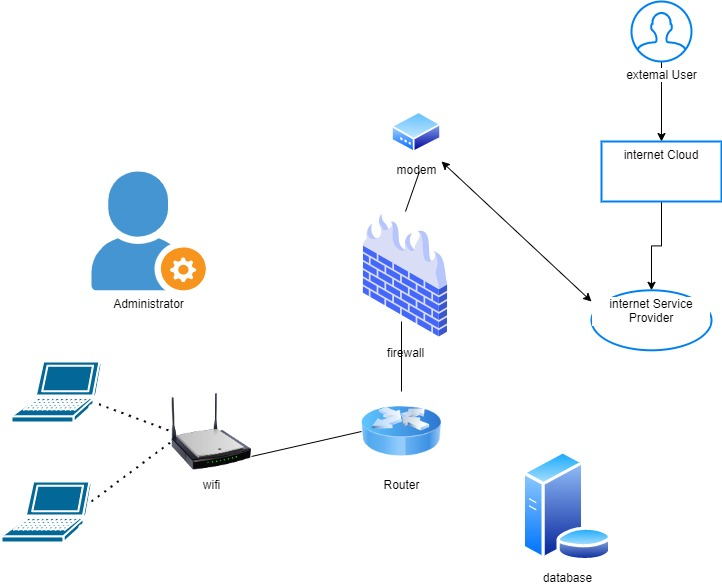
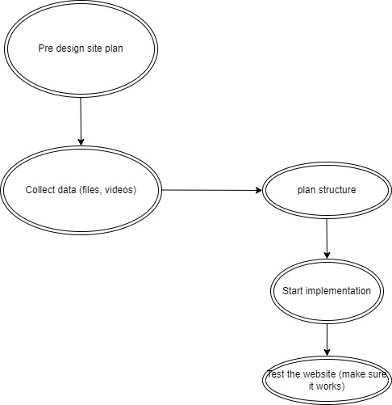
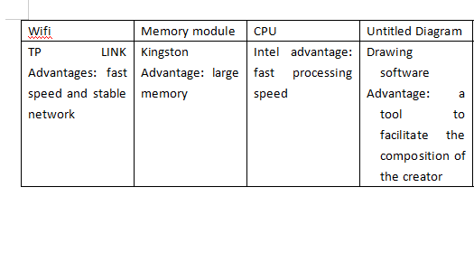

The ICT project is to design a website to publish your resume on this website for future job application needs
For designing a website, the information content of the website must be authentic and accessible. For the contributors, the resume shall be submitted truthfully, and the resume shall be described in the correct format and font. For website managers, the website should be managed regularly to make the website as concise and convenient as possible for others to watch and prevent other spam from being included.


